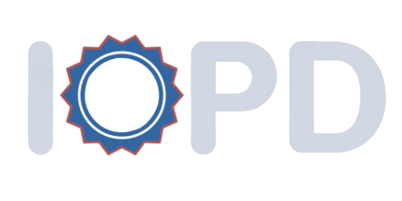
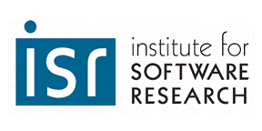
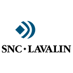
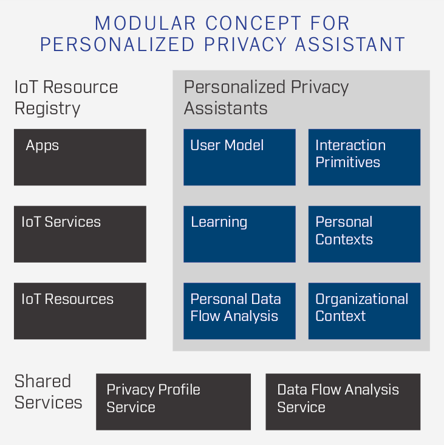
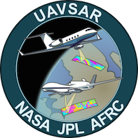
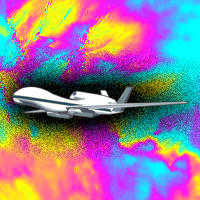
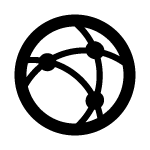
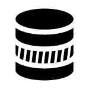

Daniel Smullen
Privacy Engineering · Connected Devices · Technical Standards
Principal Privacy Research Engineer · CableLabs
Privacy engineering for connected devices, smart homes, and technical standards.
Dr. Daniel Smullen is a Ph.D. software engineer and privacy researcher with engineering experience at Amazon Lab126 and NASA JPL. He designs privacy-enhancing technologies, interoperable standards, usable privacy and security controls, and AI-enabled trust systems for real-world products and infrastructure.
What I Build
Today at CableLabs, Dr. Smullen builds privacy and trust architectures for connected-device ecosystems, translating socio-technical privacy goals into protocol requirements, data taxonomies, usability guidance, and engineering controls. His current work spans privacy-enhancing technologies, IoT and smart-home infrastructure, interoperable network standards, and practical governance mechanisms for products that need to operate at cable-industry scale.
Before CableLabs, he built production-oriented privacy, trust, and AI systems at Amazon Lab126. That work included LLM-based pipelines for Alexa+ customer feedback, interpretable decision-tree models for privacy attestation and PII prediction, and applied machine-learning systems that turned legal, product, and customer-trust signals into actionable engineering outputs.
The foundation for that work came from Carnegie Mellon University's CyLab Security and Privacy Institute and Institute for Software Research, now S3D (The Software and Societal Systems Department), where he helped define the privacy engineering field through Ph.D. and postdoctoral research in usable privacy and security, HCI, behavioral economics, machine learning, and requirements engineering. During that earlier research period, he also engineered high-performance radar-image processing systems at NASA's Jet Propulsion Laboratory, reducing UAVSAR analysis time from weeks to minutes.
How I Work
Daniel Smullen works where software engineering, privacy law, product strategy, public policy, and human-computer interaction meet. His approach combines requirements engineering, threat modeling, qualitative and quantitative user research, machine learning evaluation, and privacy-by-design review so privacy requirements become testable system behavior rather than late-stage policy language.
Dr. Smullen's usable privacy and security work has influenced policy on Capitol Hill, guided defense sponsors on emerging mission technology, and helped Fortune 500 firms embed privacy at launch. He is strongest in settings that require translating between researchers, engineers, lawyers, executives, standards participants, and product teams while keeping the technical details precise enough for implementation.
At the Connectivity Standards Alliance (the Alliance), Dr. Smullen chairs Data Privacy Working Group activity through the Marketing and Product Subgroup and the Data Export Strategic Incubator Tiger Team; his Alliance standards work also spans Matter, Zigbee, and Aliro. Through the Institute for Operational Privacy Design, he co-authored the Design Assurance Standard, converting privacy principles into auditable controls, evidence requirements, and governance practices.
Awards
| Title | Institution | Year |
|---|---|---|
| Outstanding Contributor Award | Connectivity Standards Alliance | 2024 |
| Distinguished Research Award | 13th Symposium On Usable Privacy and Security | 2017 |
| Hima and Jive Fellowship in Computer Science for International Students | Carnegie Mellon University | 2017 |
| Ready-Set-Transfer Technology Transfer Competition Award | 23rd IEEE International Requirements Engineering Conference | 2015 |
| ECSE Engineering Design Challenge Winner | University of Ontario Institute of Technology (now Ontario Tech University) | 2014 |
| President’s Honours List | University of Ontario Institute of Technology (now Ontario Tech University) | 2014 |
| NSERC Undergraduate Student Research Award | University of Ontario Institute of Technology (now Ontario Tech University) | 2013 |
| President’s Honours List | University of Ontario Institute of Technology (now Ontario Tech University) | 2013 |
| President’s Honours List | University of Ontario Institute of Technology (now Ontario Tech University) | 2012 |
| Dean’s Honours List | University of Ontario Institute of Technology (now Ontario Tech University) | 2011 |
| Engineers Without Borders Design Challenge Winner | McMaster University | 2008 |
| DaVinci Engineering Design Challenge Winner | University of Toronto | 2007 |
Employment History
Principal Privacy Research EngineerCableLabs - Security and Privacy Technologies
|
|
 Founding Ambassador and Standards Committee MemberInstitute of Operational Privacy Design (IOPD) - Volunteer
|
Applied Scientist IIAmazon Lab126 - Alexa Sensitive Content Intelligence
|
Applied Scientist IIAmazon Lab126 - Devices & Services Trust and Privacy
|
|
 Postdoctoral ResearcherCarnegie Mellon University - Institute for Software Research / S3D (The Software and Societal Systems Department)
|
Graduate Research AssistantCarnegie Mellon University - Institute for Software Research / S3D (The Software and Societal Systems Department)
|
334F Research AssociateNASA - Jet Propulsion Laboratory
|
Research AssociateUOIT (now Ontario Tech University) - Software Quality Research Lab
|
Undergraduate Research AssistantUOIT (now Ontario Tech University) - Software Engineering Lab
|
|
 Engineer-in-Training (Co-op)SNC-Lavalin, Global Information Technologies
|
Support TechnicianSNC-Lavalin, Mining and Metallurgy
|
Laboratory Systems AdministratorDESSAU (LVM-Technisol)
|
Laboratory Systems AdministratorJEGEL
|
Projects
Privacy Preference Declaration (PPD) for Home Networks2025-PresentPPD is a privacy engineering and standards-development effort for expressing user-defined privacy preferences across home networks. The protocol architecture is designed so connected devices can discover, interpret, and respond to local privacy policy, moving preference expression from isolated product settings toward interoperable, network-level governance for IoT and smart-home ecosystems. The work, co-authored with Brian Scriber, CableLabs' Chief Information Security Officer, includes an IETF Internet-Draft architecture and a machine-readable taxonomy for describing device data handling practices, including data types, purposes, actions, sources, and destinations. It combines privacy-enhancing technology, data governance, requirements engineering, and technical standards work so preferences and declarations can be understood by people, software agents, and connected devices.
Privacy Preference Declaration for Home Networks
IETF Internet-Draft
Privacy Preference Declaration Taxonomy
IETF Internet-Draft
|
|
Defining Privacy Engineering as a Profession2025This qualitative research project examined how privacy engineering is practiced inside organizations, based on interviews with 27 privacy engineers and adjacent practitioners. The study identifies recurring responsibilities, professional challenges, core competencies, and collaboration patterns for a technical role that sits between software engineering, product management, legal, compliance, security, and data governance teams. The work clarifies privacy engineering as a technical profession rather than only a compliance function. It gives organizations and educators a stronger basis for privacy engineering job design, hiring expectations, skills assessment, professional development, training programs, and cross-functional privacy-by-design practice.
Funding support
U.S. National Science Foundation grant CCF-2217771
Defining Privacy Engineering as a Profession
Proceedings on Privacy Enhancing Technologies, 2025
|
|
Alexa+ Feedback Processing Pipeline2023-2024At Amazon Lab126's Alexa Sensitive Content Intelligence team, I built an LLM-based feedback-processing pipeline for Alexa+ that used off-the-shelf large language models to analyze chat transcripts containing customer feedback. The system framed transcript analysis as a reading-comprehension and information-extraction problem, using prompt engineering and structured extraction to identify actionable trust, safety, and product-quality signals from natural conversational context. This approach eliminated the need to develop custom BERT-style models and supporting training datasets for the feedback pipeline. It reduced engineering cost, development time, model maintenance, and data-labeling burden while preserving a scalable path for large-scale natural language processing, customer feedback analysis, and applied machine learning in production product workflows. |
|
Privacy Attestation PII Prediction and Explanation2022-2023In Amazon Devices & Services Trust and Privacy, I built privacy engineering tooling to process data type classifications and cross-reference them with legal decisions on privacy-related attestations. The goal was to predict whether systems and attestations were likely to involve personally identifiable information by modeling relationships among product data types, privacy review outcomes, compliance reasoning, and documented legal decisions. I developed an interpretable machine learning model using decision trees so the system could provide both predictions and explanations. The work connected privacy-by-design, compliance automation, data classification, PII detection, model explainability, and risk analysis, translating legal and privacy decision patterns into actionable engineering signals for product teams. |
|
Usable Privacy and Security Controls2020-2022This research thread studied several related, but distinct, problems in user-centered privacy and security: how people understand web privacy tools, how browser users want to control potentially intrusive data practices, and how informational and planning nudges can help people adopt protections such as Tor Browser and secure mobile payments. The work connects human-computer interaction, behavioral economics, usable privacy and security, privacy engineering, and practical privacy and security control design. The browser-controls paper focuses on user preferences for managing intrusive practices in web browsers, while the adoption papers focus on misconceptions, tool awareness, intervention design, and nudges that help people translate privacy and security intentions into action.
Funding support
DARPA/AFRL Brandeis grant FA8750-15-2-0277
NSF SaTC grants CNS-15-13957, CNS-1801316, and CNS-1914486
NSF grants CNS-1330596 and SES-1513957
CyLab Security and Privacy Institute fellowship support
Increasing Adoption of Tor Browser Using Informational and Planning Nudges
Proceedings on Privacy Enhancing Technologies, 2022
Awareness, Adoption, and Misconceptions of Web Privacy Tools
Proceedings on Privacy Enhancing Technologies, 2021
Managing Potentially Intrusive Practices in the Browser: A User-Centered Perspective
Proceedings on Privacy Enhancing Technologies, 2021
From Intent to Action: Nudging Users Towards Secure Mobile Payments
Sixteenth Symposium on Usable Privacy and Security, 2020
|
|
Mobile App Privacy System (MAPS)2019MAPS was a large-scale mobile app privacy compliance analysis system developed with Peter Story, Sebastian Zimmeck, and collaborators at Carnegie Mellon and Fordham. In the original "Scaling Privacy Compliance Analysis to a Million Apps" study, we were the first to crawl and analyze the entire Google Play Store ecosystem, evaluating more than one million Android apps by comparing code-level privacy practices against privacy policy disclosures. The project combined Android ecosystem crawling, privacy policy analysis, mobile app compliance automation, software measurement, and large-scale data processing to show that privacy review could scale beyond manual audits. The resulting tool and findings drew interest from public enforcement agencies, including the Federal Trade Commission and the California and New York attorneys general, who used the system to investigate app privacy practices.
Funding support
NSF Frontier Grant on Usable Privacy Policies grants CNS-1330596, CNS-1330141, and CNS-1330214
NSF XSEDE grant ACI-1548562
MAPS: Scaling Privacy Compliance Analysis to a Million Apps
Proceedings on Privacy Enhancing Technologies, 2019
|
|
|
 IoT Resource Registry2017The IoT Resource Registry was part of the larger Personalized Privacy Assistant and IoT Privacy Infrastructure work at Carnegie Mellon. It gave IoT service providers a structured way to describe nearby services, devices, resources, data practices, and user choices so privacy assistants could surface contextual notice and choice in connected environments. The project connected IoT privacy infrastructure, usable privacy and security, service discovery, metadata modeling, user consent, and privacy preference management. It helped translate machine-readable descriptions of IoT resources into user-facing privacy and security controls for smart spaces, sensors, mobile devices, and context-aware systems. Supervisor: Dr. Norman Sadeh, Carnegie Mellon University
Funding support
DARPA/AFRL Brandeis grant FA8750-15-2-0277
NSF SaTC grants CNS-15-13957, CNS-1801316, and CNS-1914486
|
Eddy: A Privacy Requirements Specification Language2016Eddy is a privacy requirements specification language that privacy analysts can use to express rules over the collection, use, transfer, and retention of personal and technical information. The language uses a SQL-like syntax to state whether an action is permitted or prohibited and to restrict those statements by data subject, purpose, actor, and system context. Eddy specifications compile into Description Logic so analysts can automatically detect conflicting requirements, reason over data flows, and trace privacy obligations within and across software architecture specifications. The project connects privacy requirements engineering, formal methods, policy analysis, data retention, compliance reasoning, and privacy-by-design for complex systems. Supervisor: Dr. Travis Breaux, Carnegie Mellon University
Funding support
NSF grant CNS-1330596
U.S. Office of Naval Research grant N002441410028
National Security Agency support
|
|
 Non-Local Interferometric SAR Parameter Estimator2015Synthetic aperture radar (SAR) and interferometric SAR (InSAR) images suffer from granular speckle noise that must be reduced before scientific analysis. At NASA JPL, we implemented enhancements to Deledalle's NL-InSAR denoising filter to improve the algorithm's speed-quality tradeoff while preserving interferometric phase, coherence, and image structure. The implementation used high-performance computing, cross-platform Python/C11, OpenMP multithreading, MPI multiprocessing, and workstation-to-supercluster portability for full-sized UAVSAR imagery. The pipeline reduced processing time from weeks to minutes and supported production radar science workflows in remote sensing and scientific image processing. Supervisor: Dr. Razi Ahmed, Jet Propulsion Laboratory |
 NL-InSAR with Gaussian-Laplacian Pyramids2015This project extended NL-InSAR filtering for interferometric Synthetic Aperture Radar by using Gaussian-Laplacian image pyramids to reduce the "canvas effect" introduced by some non-local filtering approaches. The method preserved fine image structures while improving estimation of reflectivity, interferometric phase, and coherence. The work combined remote sensing, numerical image processing, algorithm design, scientific computing, and high-performance implementation for UAVSAR data. It complemented the broader JPL InSAR pipeline by improving denoising quality and exploring scalable approaches for resolution-preserving radar image analysis. Supervisor: Dr. Razi Ahmed, Jet Propulsion Laboratory |
Incident Recognition and Intelligence System (IRIS)2014IRIS is an integrated intelligence management system for highway incident recognition, combining a web frontend for road conditions and incident video review with a computer vision backend for autonomous, scalable highway surveillance. The system supported incident detection, video capture, statistical aggregation, and operational situational awareness for transportation monitoring. The project combined computer vision, full-stack software engineering, data visualization, traffic systems, and real-time monitoring in a capstone-scale engineering prototype. IRIS won first place in the UOIT (now Ontario Tech University) Capstone ECSE Engineering Design Challenge 2014. Supervisor: Dr. Shahryar Rahnamayan, Associate Professor, UOIT (now Ontario Tech University) Special thanks to Dr. Baher Abdulhai and Asmus Georgi at University of Toronto, and Steve Spadafora at MTO for their funding and collaboration. |
Automated Marking System (AMS)2014AMS was a Ruby on Rails web application for creating, distributing, and automatically grading introductory programming assignments at UOIT (now Ontario Tech University). The system compiled, executed, and evaluated student submissions in a protected environment while providing instructors and students with immediate results, code quality metrics, and cheating-detection signals. The project combined web application development, automated testing, static analysis, dynamic analysis, sandboxed execution, educational technology, and software quality automation. It was designed to improve feedback speed, grading consistency, and course administration for programming education. Supervisor: Dr. Kamran Sartipi, Associate Professor, UOIT (now Ontario Tech University) |
|
 Policy IDE, TOSServ, Finger2IPv62013Policy IDE, TOSServ, and Finger2IPv6 were TinyOS-based wireless sensor network tools developed under an NSERC Undergraduate Research Award. The work supported policy-based programming for embedded systems, including an integrated development environment for debugging policy-driven applications, server-side support for TinyOS workflows, and IPv6-enabled remote development through Finger2IPv6. The projects combined embedded systems, wireless sensor networks, policy programming, distributed systems, IPv6 networking, developer tooling, and open-source software engineering. They were published and presented at EUSPN-2013, posted through the Stanford TinyOS community, and released in GitHub branches. Supervisor: Dr. Ramiro Liscano, Associate Dean, UOIT (now Ontario Tech University) |
Military Logistics Management System (MLMS)2013MLMS was a military logistics management and large-scale visualization system built for the UOIT (now Ontario Tech University) Data Management Systems course. The ASP.NET web application delivered supply, personnel, and operational information through a secure logistics dashboard and a Logistics Management View for rapid status assessment. The system combined database design, web application development, role-aware access, logistics data modeling, geospatial-style visualization, and operational reporting. It also provided real-time battlespace updates through an Order of Battle imagery workflow for command-and-control style situational awareness. Supervisor: Dr. Eyhab Al-Masri, Senior Lecturer, UOIT (now Ontario Tech University) |
|
 sneakyFS File System Design and Implementation2012sneakyFS is a UNIX-style file system implemented in C on a simulated hard disk. It uses hybrid indexed and linked allocation to manage disk space efficiently while supporting large disks, deep directory trees, and large files. The project incorporated transparent encryption, journaling, universal unique identifiers, low-level memory management, data structures, and object-oriented design patterns in C. It won "Best Project" distinction in the UOIT (now Ontario Tech University) Operating Systems course and demonstrates systems programming, file-system architecture, and secure storage design. Supervisor: Dr. Kamran Sartipi, Associate Professor, UOIT (now Ontario Tech University) |
Datacenter Utilization Research Study2012This research study assessed mission-critical datacenter utilization, availability, and performance for SNC-Lavalin Global Information Technologies risk management and infrastructure remediation. The work quantified business value, workload, and operational dependency for critical server assets at the West Mall campus datacenter. The study combined infrastructure risk assessment, availability analysis, performance measurement, disaster recovery planning, asset utilization modeling, and executive reporting. The findings informed a practical remediation plan for improving resilience, capacity planning, and infrastructure investment decisions. Supervisor: M. Ross, Senior Vice-President, SNC-Lavalin Global Information Technologies |
Laboratory Information Management System (LIMS)2009This project supported collaborative development of ISO 9000-certified laboratory information management software for production geotechnical and materials-testing workflows. The system managed sample intake, logging, categorization, process queues, laboratory status tracking, and reporting for active laboratory operations. The work combined database-backed workflow automation, quality management, production software support, laboratory information management, and regulated-process documentation. It bridged engineering operations, laboratory QA/QC, and software maintenance during live infrastructure project delivery. Supervisor: Dr. John Emery, P.Eng., President, JEGEL |
2009 Trans-Canada Highway Rehabilitation Geoinformatics2009This geoinformatics project supported large-scale asphalt rehabilitation planning on the Trans-Canada Highway across more than 300 km around Banff. The work produced technical drawings and location data for probe holes, highway layout, pavement conditions, and remediation planning. The project combined civil engineering support, geospatial data management, CAD-style technical drafting, field-data coordination, pavement rehabilitation, and infrastructure project documentation. It helped translate subsurface sampling and highway-condition data into actionable plans for construction and remediation teams. Supervisor: Alain Duclos, P.Eng., Senior Engineer, JEGEL |
Refereed Publications
| Date | Title | Venue | Links |
|---|---|---|---|
| 2025 | Privacy Preference Declarations: Signed Receipts for Expectation-Aligned Smart Homes | IEEE Symposium on Privacy Expectations (ISoPE) | |
| 2025 | Defining Privacy Engineering as a Profession | Proceedings on Privacy Enhancing Technologies (PoPETs) | |
| 2022 | Increasing Adoption of Tor Browser Using Informational and Planning Nudges | Proceedings on Privacy Enhancing Technologies (PoPETs) | |
| 2021 | Informing the Design and Refinement of Privacy and Security Controls | Carnegie Mellon University Dissertation | |
| 2021 | Awareness, Adoption, and Misconceptions of Web Privacy Tools | Proceedings on Privacy Enhancing Technologies (PoPETs) | |
| 2021 | Managing Potentially Intrusive Practices in the Browser: A User-Centered Perspective | Proceedings on Privacy Enhancing Technologies (PoPETs) | |
| 2020 | From Intent to Action: Nudging Users Towards Secure Mobile Payments | Symposium on Usable Privacy and Security (SOUPS) | |
| 2020 | The Best of Both Worlds: Mitigating Trade-offs Between Accuracy and User Burden in Capturing Mobile App Privacy Preferences | Proceedings on Privacy Enhancing Technologies (PoPETs) | |
| 2019 | MAPS: Scaling Privacy Compliance Analysis to a Million Apps | Proceedings on Privacy Enhancing Technologies (PoPETs) | |
| 2019 | Natural Language Processing for Mobile App Privacy Compliance | AAAI Spring Symposium | |
| 2018 | Analyzing Privacy Policies at Scale: From Crowdsourcing to Automated Annotations | ACM Transactions on the Web | |
| 2018 | Personalized Privacy Assistants for the Internet of Things: Providing Users with Notice and Choice | IEEE Pervasive Computing | |
| 2017 | Improving Security in Software Acquisition with Data Retention Specifications | US Navy Acquisition Research Program Sponsored Report Series | |
| 2016 | Privacy Risk in Cybersecurity Data Sharing | ACM Workshop on Information Sharing and Collaborative Security (WISCS) | |
| 2016 | Modeling, Analyzing, and Consistency Checking Privacy Requirements Using Eddy | Symposium and Bootcamp on the Science of Security (HotSoS) | |
| 2015 | Detecting Repurposing and Over-Collection in Multi-party Privacy Requirements Specifications | IEEE International Requirements Engineering Conference | |
| 2015 | Toward Rapid Recertification Using Formal Analysis | US Navy Acquisition Research Program Sponsored Report Series | |
| 2014 | Genetic Algorithm with Self-Adaptive Mutation Controlled by Chromosome Similarity | IEEE Congress on Evolutionary Computation (CEC) | |
| 2013 | Integrated Development Environment for Debugging Policy-based Applications in Wireless Sensor Networks | Procedia Computer Science |
Standards & Technical Drafts
| Title | Item | Links |
|---|---|---|
| Privacy Preference Declaration for Home Networks | IETF Internet-Draft | |
| Privacy Preference Declaration Taxonomy | IETF Internet-Draft |
Posters & Talks
| Date | Title | Item | Venue | Links and Resources |
|---|---|---|---|---|
| 2026 | PETs in Practice: From Privacy Policies to User-Held Preferences with CableLabs | Recorded Series | Duality Technologies PETs in Practice | |
| 2025 | AI's Best Friend: The Role of PETs, Enabling Data Use & Operationalizing Privacy | Panel | IAPP Privacy. Security. Risk. 2025 | |
| 2025 | Privacy Preference Declarations: Signed Receipts for Expectation-Aligned Smart Homes | Paper Session | IEEE Symposium on Privacy Expectations (ISoPE 2025) | |
| 2018 | Personalized Privacy Assistant Project | Research Poster | US Federal Trade Commission PrivacyCon 2018 | |
| 2017 | Assisting Users in a World Full of Cameras: A Privacy-aware Infrastructure for Computer Vision Applications | Research Poster | US Federal Trade Commission PrivacyCon 2017 | |
| 2017 | A Privacy Assistant for the Internet of Things | Research Poster | 13th Symposium On Usable Privacy and Security (SOUPS 2017) | |
| 2015 | Detecting Repurposing and Over-Collection in Multi-party Privacy Requirements Specifications | Conference Talk | 23rd IEEE International Requirements Engineering Conference (RE 2015) | |
| 2015 | Towards Rapid Re-Certification Using Formal Analysis | Conference Talk | US Navy Postgraduate School 12th Annual Acquisition Research Symposium | |
| 2014 | Genetic Algorithm with Self-Adaptive Mutation Controlled by Chromosome Similarity | Conference Talk | IEEE World Congress on Computational Intelligence (WCCI 2014), Evolutionary Computation Conference (CEC 2014) | |
| 2013 | How Much Do We Reveal Through Metadata? An Assessment of Online Privacy | Preliminary Study Poster | IBM Consortium for Software Engineering Research (CSER 2013) | |
| 2013 | Policy IDE... and lessons learned since. | Conference Talk | The 4th International Conference on Emerging Ubiquitous Systems and Pervasive Networks (EUSPN-2013) | |
| 2013 | Facilitating the Internet of Things with Policy Programming | Research Poster | UOIT (now Ontario Tech University) Undergraduate Research Showcase 2013 |